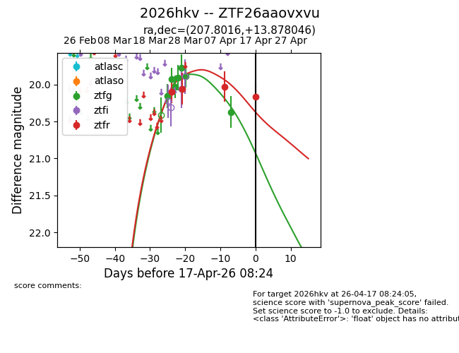
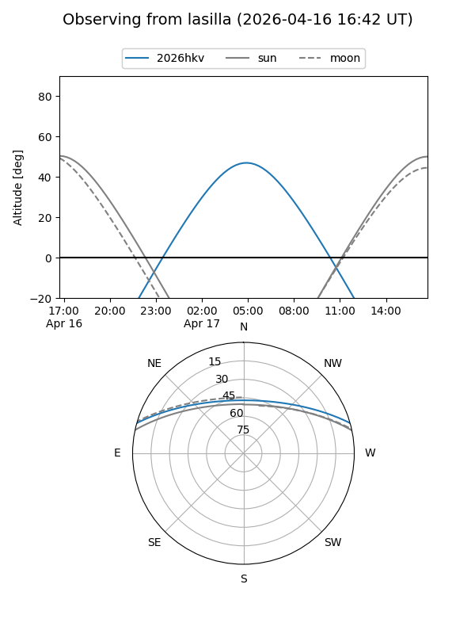
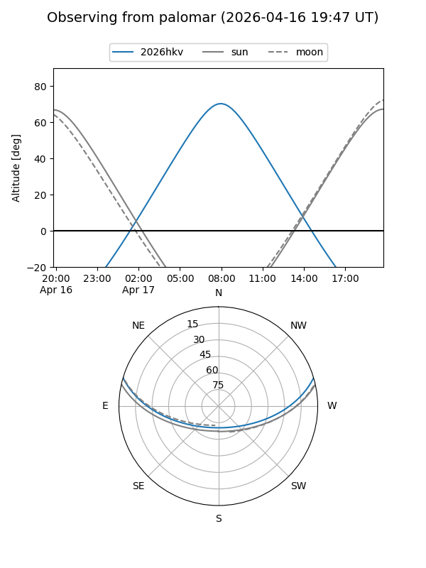
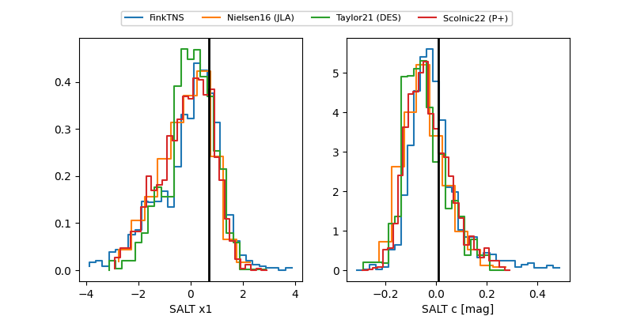

2026hkv
Target 2026hkv at 2026-04-17 08:31
Aliases and brokers:
FINK: link
Lasair: link
ALeRCE: link
TNS: link
YSE: link
alt names
ZTF26aaovxvu (ztf,fink_ztf)
2026hkv (tns,yse)
Coordinates:
equatorial (ra, dec) = 207.8016,+13.87805
equatorial (HMS+DMS) = 13:51:12.38,+13:52:40.97
galactic (l, b) = (352.3730,+70.76297)
Flags:
Photometry:
last ztfg=20.37, ztfr=20.17
7 ztfg, 4 ztfr detections
Lightcurve

Visibility


Additional plots
